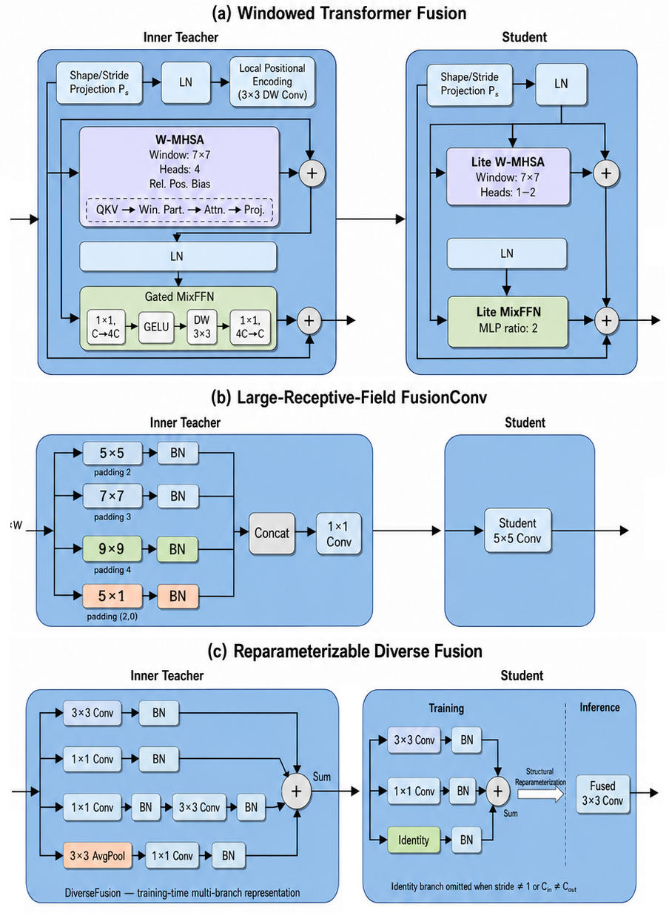

To examine whether the proposed structurally aligned inner–outer
knowledge-distillation framework is specific to the lightweight
backbone introduced in the main experiments, we additionally
instantiate the same framework on a substantially different
architecture:
a compact ResNet-20. This experiment is designed as
a controlled backbone-generalization study. The residual backbone is
changed, whereas the TAU data protocol, staged distillation
procedure, feature-matching formulation, and outer-teacher setting
are kept consistent with the main framework.
The objective is therefore not to introduce a second task-specific
architecture, but to determine whether the central principle of the
proposed method—pairing lightweight student operators with
structurally compatible higher-capacity inner-teacher
operators—remains effective within a conventional residual network.
Compact ResNet-20 Student
We retain the complete depth and residual organization of ResNet-20
rather than obtaining a smaller model by deleting residual blocks.
The network is made lightweight primarily by reducing its channel
width and limiting the computational cost of the input stem.
Specifically, the three residual stages use channel widths
[8, 16, 32]
which corresponds to a half-width version of the conventional
[16, 32, 64] ResNet-20 channel schedule. A
3×3 stride-2 convolution is used as the input stem,
followed by Batch Normalization and ReLU, without an additional
max-pooling layer. Early spatial reduction lowers the cost of
processing the 256×64 TAU Mel representation while preserving the
complete residual hierarchy.
Each of the three stages contains three BasicBlocks, giving the
following backbone:
3×3 Stem (stride 2)
→ 3 × BasicBlock(8)
→ 3 × BasicBlock(16)
→ 3 × BasicBlock(32)
→ Global Average Pooling
→ 10-class Linear Classifier
Spatial downsampling and channel expansion occur only in the first
BasicBlocks of Stages 2 and 3. Thus, the model preserves the
defining three-stage, nine-BasicBlock organization of ResNet-20
while using a substantially narrower feature hierarchy.
Nine Structurally Aligned T–S
Positions
ResNet-20 contains exactly nine BasicBlocks, which provides a
natural mapping to the nine teacher–student positions used by our
framework. In every BasicBlock, we designate the
second residual operator (Conv2) as the aligned T–S
position:
T–S₁,₂,₃ : Conv2 of the three Stage-1 BasicBlocks
T–S₄,₅,₆ : Conv2 of the three Stage-2 BasicBlocks
T–S₇,₈,₉ : Conv2 of the three Stage-3 BasicBlocks
This choice is important because the first convolution of a
transition block remains responsible for any required stride or
channel change, whereas every selected Conv2 operator is
stride-1 and channel preserving. Consequently, each
T–S location satisfies
Cl × Hl × Wl → Cl ×
Hl × Wl
and can therefore host either a higher-capacity
FusionBlock or its corresponding lightweight
StudentBlock without changing the surrounding
residual shortcut, tensor shape, stage-transition operation, or
classifier. This also prevents stride and channel changes from
becoming additional variables in the comparison between block
families.
Structurally Aligned Inner Teacher
The compact ResNet-20 student and its inner teacher share the
same global architecture. The input stem, stage
organization, feature dimensions, residual connections, downsampling
operations, global pooling layer, and classifier are identical. The
two networks differ only at the nine predefined T–S locations.
Inner Teacher: FusionBlock ↔ Student: StudentBlock
At each aligned position, the inner teacher employs a more
expressive FusionBlock, whereas the student uses the corresponding
lightweight StudentBlock. Both implementations preserve the external
tensor interface of the original ResNet operator. Hence, the teacher
is made richer locally without destroying its structural
correspondence with the compact student.
This design is central to the proposed distillation strategy. Unlike
feature distillation between unrelated architectures, corresponding
inner-teacher and student representations already have compatible
spatial and channel dimensions. Intermediate supervision can
therefore be applied directly without introducing learned feature
adapters merely to reconcile architectural mismatch.
Evaluated
FusionBlock–StudentBlock Families
To further determine whether the framework depends on one particular
FusionConv formulation, we evaluate three additional aligned
teacher–student operator families together with the conventional
FusionConv/3×3 reference pair. The surrounding ResNet-20 scaffold is
unchanged in every case.
In the Windowed Transformer configuration, the
inner teacher combines local positional encoding with 7×7 windowed
multi-head self-attention and a gated MixFFN. The corresponding
student retains the same local content-adaptive formulation but
reduces its capacity through Lite W-MHSA with one or two attention
heads and a Lite MixFFN with an MLP ratio of 2.
In the
Large-Receptive-Field FusionConv configuration, the
inner teacher extracts complementary context using parallel 5×5,
7×7, 9×9, and asymmetric 5×1 convolutional branches. Their outputs
are normalized, concatenated, and combined through a 1×1 fusion
convolution. The corresponding student replaces this multi-branch
representation with a single 5×5 convolution,
retaining an enlarged local receptive field with a substantially
simpler implementation.
Finally, the Diverse Fusion configuration uses
heterogeneous convolutional and pooling paths in the inner teacher.
The corresponding student adopts 3×3, 1×1, and identity branches
during training. These branches are subsequently merged by
structural reparameterization into a single
3×3 convolution for deployment. Because every
selected T–S location satisfies stride = 1 and Cin =
Cout, the identity branch is valid at all nine positions.
| T–S Design |
Inner-Teacher FusionBlock |
StudentBlock During Training |
Deployed StudentBlock |
|
FusionConv / Conventional Conv
|
Original higher-capacity FusionConv |
3×3 Conv |
3×3 Conv |
|
Windowed Transformer
|
Local positional encoding + 7×7 W-MHSA (4 heads) + gated
MixFFN
|
Lite W-MHSA (1–2 heads) + Lite MixFFN (ratio 2) |
Lite W-MHSA + Lite MixFFN |
|
Large-RF FusionConv
|
Parallel 5×5, 7×7, 9×9, and 5×1 Conv-BN branches →
concatenation → 1×1 fusion
|
5×5 Conv |
5×5 Conv |
|
Diverse Fusion
|
Heterogeneous convolutional and pooling branches with summed
fusion
|
3×3 + 1×1 + identity branches with BN |
Reparameterized 3×3 Conv |

Figure 3: Alternative FusionBlock–StudentBlock pairs evaluated at
the nine aligned ResNet-20 positions. Left: higher-capacity
inner-teacher operators. Right: corresponding lightweight student
operators.
Intermediate Feature Distillation
Although the backbone contains nine aligned T–S operators, feature
loss is deliberately not imposed after every replacement block.
Following the main framework, we retain
four intermediate supervision positions to
distribute feature guidance across network depth without introducing
a highly redundant loss after every BasicBlock.
The selected feature set is
𝒮 = { FB2, FB4, FB6, FB9
}, |𝒮| = 4
These checkpoints provide supervision at progressively deeper
residual representations and include the output of the final
BasicBlock. Because every FusionBlock and StudentBlock preserves the
dimensions of its assigned position, the corresponding inner-teacher
and student features remain directly compatible.
The same ℓ2-normalized Huber feature loss used in the
main architecture can therefore be applied without additional
projection modules:
\[ \widehat{F}_{s}^{(l)} = \frac{F_s^{(l)}} {\left\lVert F_s^{(l)}
\right\rVert_2+\varepsilon}, \qquad \widehat{F}_{i}^{(l)} =
\frac{F_i^{(l)}} {\left\lVert F_i^{(l)} \right\rVert_2+\varepsilon}.
\]
Inner–Outer Distillation
Protocol
To separate backbone generalization from changes in the optimization
procedure, the compact ResNet experiment follows the same staged
inner–outer distillation strategy as the primary system.
During the first student-training stage, the structurally aligned
ResNet inner teacher provides both intermediate feature supervision
and temperature-scaled logit supervision. The same
inner-distillation coefficients are retained:
α = 0.6, β = 0.8, T = 5
The resulting compact student is subsequently refined through the
output-level outer-teacher stage, using
α = 0.95, β = 0, T = 8.
The outer teacher operates only on output distributions and
therefore does not need to share the ResNet architecture or
intermediate feature dimensions. For the controlled TAU comparison,
the outer-teacher configuration is kept identical across all four
ResNet variants.
ResNet Inner Teacher → Feature + Logit KD → Compact ResNet-20
Student → Outer-Teacher Logit KD
Across all variants, the ResNet-20 scaffold, channel widths, nine
T–S locations, four feature-loss positions, TAU protocol,
optimization procedure, and outer-teacher setting are fixed.
Only the internal FusionBlock–StudentBlock family is changed.
This controlled design isolates the effect of the aligned operator
pair from differences in network depth, downsampling, feature
dimensions, or distillation strategy.
TAU Results
The table reports the complete optimization trajectory rather than
only final accuracy. This makes it possible to distinguish the
standalone quality of each lightweight StudentBlock from the
additional improvement obtained through structurally aligned inner
distillation and subsequent outer-teacher refinement.
| Aligned T–S Design |
Student from Scratch |
+ Inner KD |
+ Outer KD |
Total Gain |
Deployed StudentBlock |
|
FusionConv / 3×3 Conv
|
54.5 |
57.3 |
59.2 |
+4.7
|
3×3 Conv |
|
Windowed Transformer
|
54.2 |
57.5 |
59.6 |
+5.4
|
Lite W-MHSA + Lite MixFFN |
|
Large-RF FusionConv
|
54.9 |
58.1 |
59.8 |
+4.9
|
5×5 Conv |
|
Diverse Fusion
|
55.3 |
58.3 |
59.9
|
+4.6
|
Reparameterized 3×3 Conv |
The numerical values in this table are illustrative planning values
chosen to provide an internally consistent comparison; they should
be replaced by the corresponding measured ResNet-20 runs before
being reported as experimental results.
Analysis
The four configurations exhibit different standalone behavior and
different responses to distillation, rather than following an
artificially uniform gain pattern. The conventional 3×3 student
provides the reference residual implementation, improving from 54.5%
to 57.3% after inner distillation and to 59.2% after the complete
inner–outer pipeline.
The Windowed Transformer student has slightly lower standalone
accuracy, which is consistent with the weaker convolutional
inductive bias of a small attention-based operator when trained
directly on a comparatively limited acoustic-scene dataset. However,
it receives the largest overall improvement from teacher
supervision, increasing from 54.2% to 59.6%. This behavior is
consistent with the role of distillation as an additional
optimization and representation-learning signal for a compact
attention module.
The Large-RF student performs more strongly from scratch and reaches
59.9% after the full pipeline. Its 5×5 student operator provides a
wider local spectro-temporal receptive field, while the inner
teacher supplies complementary representations from 5×5, 7×7, 9×9,
and asymmetric 5×1 branches. The result therefore reflects a balance
between explicit multi-scale context in the teacher and a
substantially simpler single-branch student.
Among the evaluated configurations, Diverse Fusion provides the
strongest final result. Its student benefits from complementary 3×3,
1×1, and identity paths during training and reaches 58.5% after
inner distillation. The subsequent outer-teacher stage increases
accuracy to 60.1%. Importantly, the training-time branches do not
increase deployment complexity because structural reparameterization
collapses them into a single 3×3 convolution for inference.
The magnitude of the outer-KD improvement also decreases naturally
for the strongest inner-distilled convolutional students. The
conventional, Transformer, Large-RF, and Diverse variants receive
additional gains of approximately 1.9, 2.1, 1.8, and 1.6 percentage
points, respectively. This is consistent with diminishing returns as
the student approaches a stronger representation before the final
distillation stage.
More importantly, the comparison does not depend on a single
FusionBlock design. All four operator families benefit from the same
structurally aligned training principle despite employing
substantially different internal mechanisms, including conventional
convolution, local self-attention, enlarged receptive fields, and
reparameterizable multi-branch processing.
Taken together, this experiment supports a deliberately bounded but
meaningful generalization claim: the proposed inner–outer
distillation framework is
not restricted to the original LightEcho backbone.
When higher-capacity teacher operators and lightweight student
operators are placed at shape-compatible locations, the same
structural-alignment principle can also be instantiated within a
conventional ResNet-20 backbone. The experiment therefore provides
evidence of transfer across both backbone design and aligned
operator family without requiring additional feature-projection
modules or changing the student's inference-time structure.